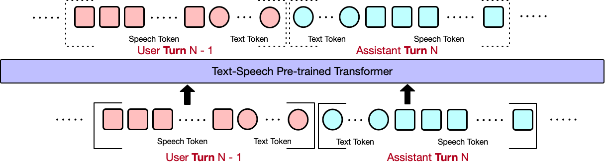

We provide OmniFlatten, a groundbreaking model designed for full-duplex conversation, which
effectively mirrors the complexity and dynamics of natural human dialogue. This model leverages a novel
multi-stage post-training scheme to adapt a large text-based language model into an integrated speech-text
dialogue system that operates in real time. Through progressive fine-tuning, OmniFlatten aligns speech and
text modalities without altering the core architecture, ensuring low latency and seamless interactions. This
approach paves the way for developing more efficient and natural end-to-end full-duplex spoken dialogue
systems.
Experiments
We use a progressive learning approach for model training, adopting Speech-Text Alignment, 4-streaming training, 3-streaming training, and 2-streaming training.
4-Streaming Training

Cases
We will show you some cases:
Metrics
Updating...
Citations
@misc{zhang2024omniflattenendtoendgptmodel,
title={OmniFlatten: An End-to-end GPT Model for Seamless Voice Conversation},
author={Qinglin Zhang and Luyao Cheng and Chong Deng and Qian Chen and Wen Wang and Siqi Zheng and Jiaqing Liu and Hai Yu and Chaohong Tan},
year={2024},
eprint={2410.17799},
archivePrefix={arXiv},
primaryClass={cs.CL},
url={https://arxiv.org/abs/2410.17799},
}